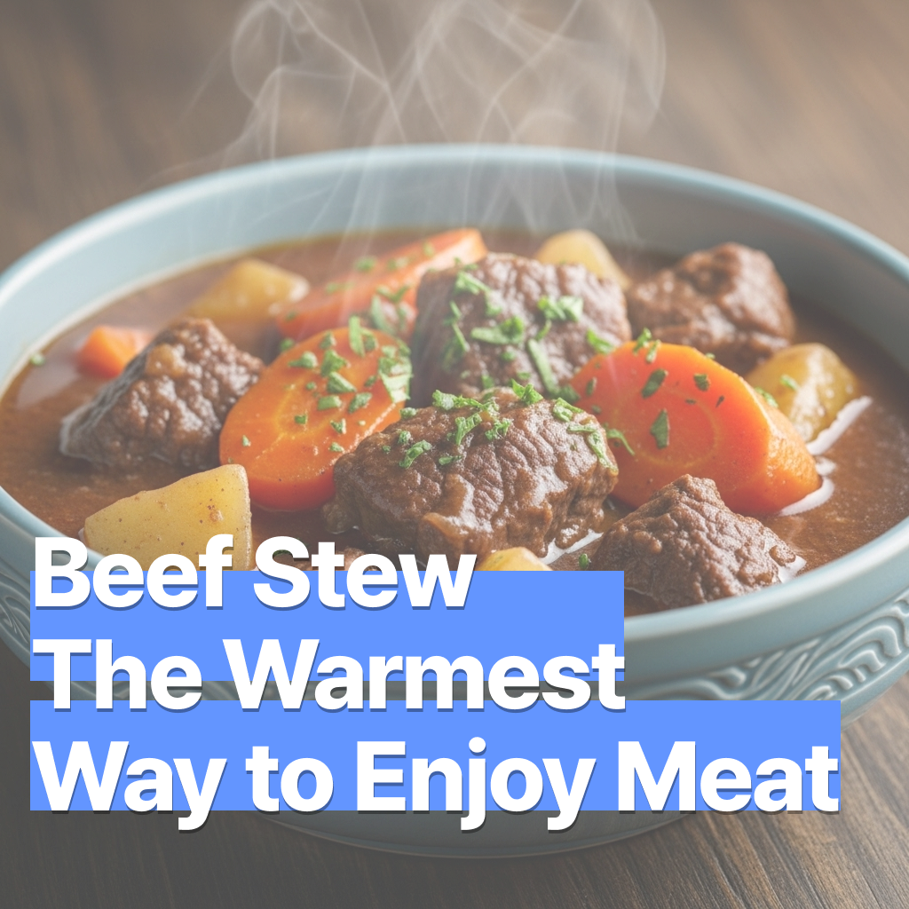

비프 스튜 – 고기를 먹는 가장 따뜻한 방법
2025-07-16

비프 스튜 – 고기를 먹는 가장 따뜻한 방법
고소한 소고기와 부드럽게 익은 야채가 어우러진 스튜 한 그릇은 온몸을 녹이는 따뜻한 위로입니다. 진한 육즙과 향신료의 조화는 시간과 정성을 들인 음식만이 줄 수 있는 특별한 만족을 선사하죠.
🛒 재료 (4인 기준)
- 소고기(양지 또는 사태) 600g
- 양파 1개
- 당근 1~2개
- 감자 2개
- 셀러리 1대
- 토마토페이스트 또는 토마토캔 4~5큰술
- 레드 와인 ½컵 (선택)
- 소고기 육수 또는 물 3컵
- 월계수 잎 1장
- 타임, 로즈마리 약간
- 소금, 후추
- 올리브유 2큰술
- 밀가루 2큰술 (고기용 + 루용)
- 버터 1큰술 (루용)
🔪 재료 손질
소고기: 키친타월로 핏물을 제거하고 한 입 크기로 큼직하게 썬 뒤, 겉면에 밀가루를 살짝 묻혀 준비
양파: 굵게 채썰기
당근: 둥글게 슬라이스
감자: 큼직하게 썰기
셀러리: 얇게 썰기
토마토페이스트: 약한 불에서 2~3분 볶아 신맛 줄이기
허브: 생잎이면 향이 풍부하며, 건조 허브도 OK
🧈 브라운 루 만들기
팬에 버터 1큰술을 녹이고 밀가루 1큰술을 넣어 갈색빛이 날 때까지 천천히 저어줍니다. 스튜에 넣으면 묽은 국물의 농도를 자연스럽게 잡고 고소한 맛이 더해져요.
🍷 조리 방법
- 냄비에 올리브유를 두르고 소고기를 노릇하게 앞뒤로 구워 육즙을 가둡니다.
- 고기를 빼고 양파와 셀러리를 볶아 단맛을 끌어냅니다.
- 당근과 감자를 넣어 섞고, 미리 볶아 둔 토마토페이스트와 육수를 더합니다.
- 레드 와인, 허브, 월계수 잎, 구운 고기를 넣고 약불에서 1시간 30분~2시간 끓입니다.
- 간은 중간과 마지막 두 번 점검해 주세요 — 재료가 익으며 간이 변할 수 있어요.
- 고기와 야채가 눅눅해지지 않도록 약불에서 천천히 조리하고, 야채는 조리 후반부에 넣는 것도 방법입니다.
- 원하는 경우 브라운 루를 추가해 농도 조절.
💡 팁
- 연속 조리보다 하루 숙성 후 재가열하면 훨씬 깊은 맛을 냅니다.
- 바게트, 치아바타와 함께 내면 완벽한 한 끼.
- 압력솥으로 빠르게 익히는 버전도 가능해요.
- 야채는 너무 익지 않게 타이밍 조절하면 씹는 맛을 더 살릴 수 있어요.